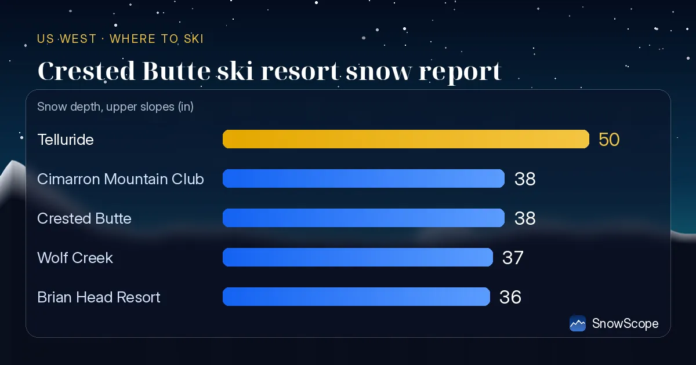
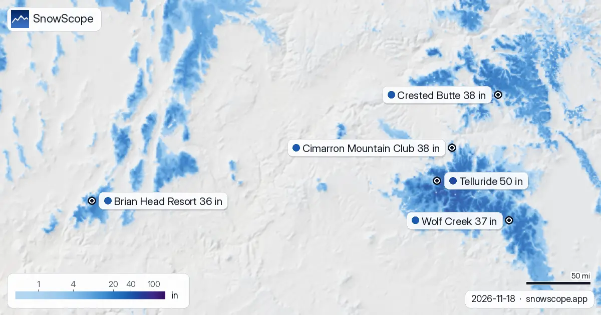

Crested Butte ski resort snow report: 38 in up top (US West, 18 November)
Crested Butte ski resort snow report – At 10,620 ft (3,237 m) on Telluride, today's 22 in (56 cm) is more than this date brought in 31 of the past 46 winters (usual: 11 in (29 cm)): a good amount of water is already stored in the snow. The biggest snow store in the US West today is at Telluride: about 50 in (126 cm) on its upper slopes, by our model. Cimarron Mountain Club holds 38 in (97 cm) and Crested Butte 38 in (97 cm). Snow now covers 281,920 sq mi (730,170 km²) in the US West; 168 of 193 resorts have some on their upper slopes. Snow depth is only half the story: dense, older snow holds more water than the same depth of new snow.
See the live snow forecast for Crested Butte in the SnowScope appSnow depth, powder alerts and the 3D map, free.
Normal, early or late?
Cimarron Mountain Club holds a normal amount of snow for the date at 10,584 ft (3,226 m): 11 in (27 cm), more than in 25 of the past 46 winters (usual: 10 in (26 cm)).
At 10,285 ft (3,135 m) on Crested Butte the snow store is behind: 7 in (19 cm) today against a usual 12 in (31 cm). On 18 November, only 15 of the past 46 winters held less.
| Resort | Snow depth | New snow, 72 h | Coming, next days | Top |
|---|---|---|---|---|
| Telluride | 50 in (126 cm) | 4 in (10 cm) | 5 in (13 cm) | 12,507 ft (3,812 m) |
| Cimarron Mountain Club | 38 in (97 cm) | 1 in (3 cm) | 4 in (10 cm) | 11,355 ft (3,461 m) |
| Crested Butte | 38 in (97 cm) | 2 in (5 cm) | 4 in (10 cm) | 11,444 ft (3,488 m) |
| Wolf Creek | 37 in (93 cm) | 6 in (14 cm) | 4 in (10 cm) | 11,762 ft (3,585 m) |
| Brian Head Resort | 36 in (92 cm) | 9 in (22 cm) | 4 in (11 cm) | 10,909 ft (3,325 m) |

Far ahead of the rest
Telluride has 50 in (126 cm) on its upper slopes, well ahead of Cimarron Mountain Club with 38 in (97 cm).
At about 10,620 ft (3,237 m), Telluride has 22 in (56 cm) today; a normal 18 November has 11 in (29 cm) there.
That is more than in 31 of the 46 past winters on this date.
In past winters the best snow at Telluride usually came early January / early March.
Day by day at Telluride: Wednesday 18 November 3 in (7 cm); Friday 20 November 2 in (4 cm); Saturday 21 November 4 in (9 cm).
Height by height at Telluride: 8,734 ft (2,662 m) 3 in (8 cm) on the ground, 4 in (10 cm) more in the next 7 days; 10,620 ft (3,237 m) 17 in (42 cm) on the ground, 5 in (12 cm) more in the next 7 days; 12,507 ft (3,812 m) 46 in (117 cm) on the ground, 6 in (16 cm) more in the next 7 days.
How much snow is lying
Since 16 November the snow cover went up from 104,348 sq mi (270,260 km²) to 281,920 sq mi (730,170 km²); on 21 November the forecast gives 347,843 sq mi (900,910 km²).
Height changes everything at Telluride: our model gives 3 in (8 cm) at the base (8,734 ft / 2,662 m), 17 in (42 cm) at mid-mountain (10,620 ft / 3,237 m) and 46 in (117 cm) at the top (12,507 ft / 3,812 m).
Snow still to come
Until 21 November, the forecast adds 5 in (13 cm) at Telluride, 4 in (11 cm) at Brian Head Resort and 4 in (10 cm) at Cimarron Mountain Club; amounts several days out can still change.
At Telluride the freezing level reaches 7,940 ft (2,420 m) to 10,827 ft (3,300 m) on 19 November: lower down the snow may turn wet, higher up it stays cold.
Forecasts a few days ahead can change: look at the map again the day before you travel.
Measured snow
The Beartown station (11,581 ft / 3,530 m) reported a snow depth of 33 in (84 cm) on 16 November. The Leavitt Lake station (9,600 ft / 2,926 m) reported a snow depth of 28 in (71 cm) on 16 November, 10 in (25 cm) of it from the last 24 hours. Measured, not modelled: the Black Mesa station (11,581 ft / 3,530 m) recorded 27 in (69 cm) of snow on the ground on 16 November.
Two kinds of numbers here: model estimates for the upper slopes of each resort, and station measurements that are exact but cover one point on the date shown.
Tips for skiers
- Snow on the map does not mean a resort is open: check lifts and opening dates on the resort's website.
- Early-season snow is thin. Stay on open, groomed pistes: rocks and grass can hide just under the surface.
- Shade protects the snowpack. High, north-facing slopes get less sun, so their snow lasts longer than on the south side.
- Before you ski off-piste or go touring, read the official avalanche bulletin (links below).
- Get a powder alert in the SnowScope app to know when Telluride gets fresh snow.
About these numbers
Resort snow depths are the deepest snow on the resort's upper slopes from the SnowScope snow model (about 1 km, run of 18 November); they are estimates for an area, not a measurement at one point. Station values are measurements on the date shown. Forecasts can change. Always read the official avalanche bulletin before going off-piste.
Official avalanche bulletins: Colorado Avalanche Information Center
Cite this report
For research, teaching or the press: the numbers and charts are free to reuse under CC BY 4.0 with this citation.
SnowScope (2026), Crested Butte ski resort snow report: 38 in up top (US West, 18 November), https://snowscope.app/blog/en/2026/11/us-west-crested-butte-snow-depth-today-18-november-2026.html, accessed 2026-11-18
SnowScope (Atlas Labs). (2026, November 18). Crested Butte ski resort snow report: 38 in up top (US West, 18 November). SnowScope snow reports. https://snowscope.app/blog/en/2026/11/us-west-crested-butte-snow-depth-today-18-november-2026.html
BibTeX
@misc{snowscope2026uswestcrestedbuttesnowde,
author = {{SnowScope (Atlas Labs)}},
title = {Crested Butte ski resort snow report: 38 in up top (US West, 18 November)},
year = {2026},
month = nov,
howpublished = {\url{https://snowscope.app/blog/en/2026/11/us-west-crested-butte-snow-depth-today-18-november-2026.html}},
note = {Published 2026-11-18 15:47 UTC; accessed 2026-11-18}
}· CC BY 4.0 · Methods, data and tools →
Crested Butte: snow and temperature by height, this winter vs last (tools) →
Follow Crested Butte
Free: a message when fresh snow is coming, and the forecast every morning.
More snow reports

What the measured snow gauges say about the North Lake Tahoe storm, why the first snow is heavy and wet, and how Sugar Bowl, Northstar and Diamond Peak compare with 46 winters.

About 28 inches of new snow at Mammoth and 26 inches at June Mountain on 18-19 November. What the storm is, how it ranks against past winters, and the best days to go.